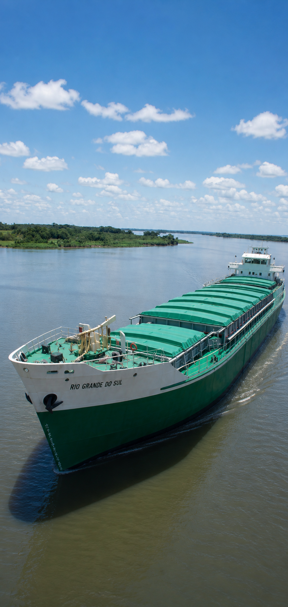
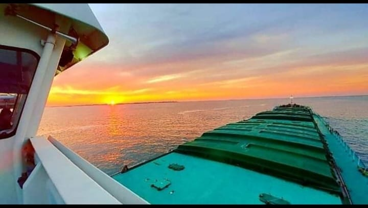
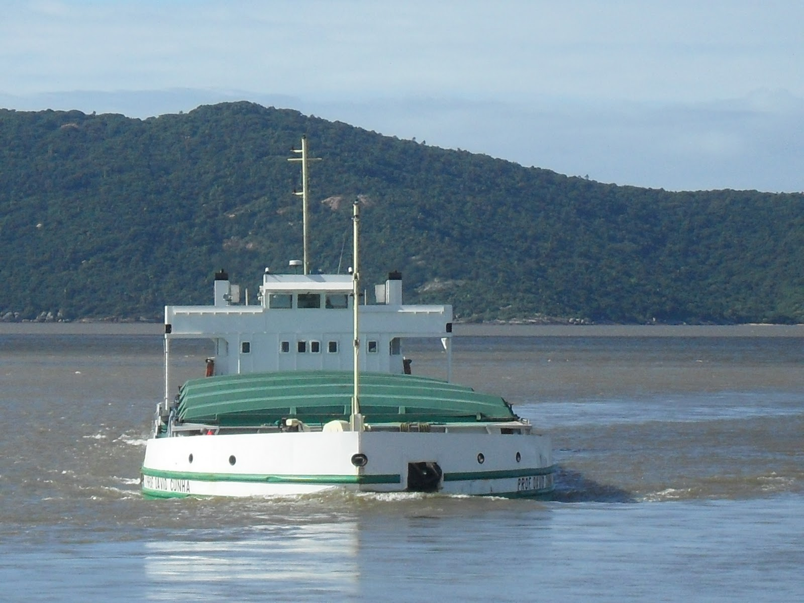
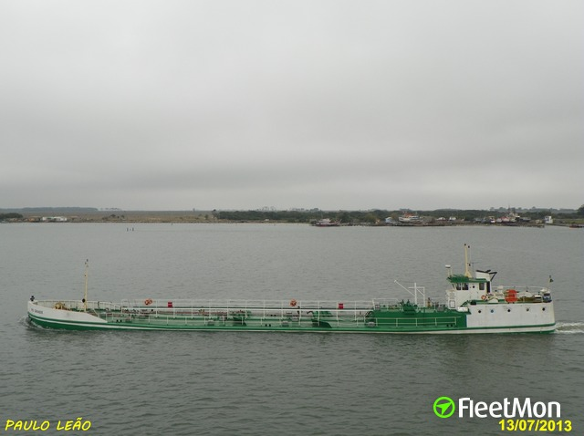
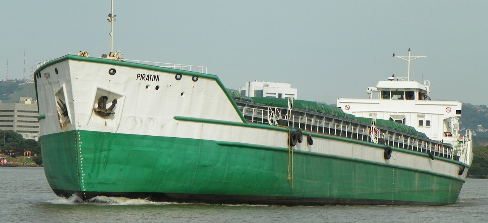

Transporte hidroviário
Embarcações de grande comprimento para movimentação regular de cargas secas, granéis sólidos e produtos ensacados na Lagoa dos Patos. Operação contínua com cronogramas regulares e rastreamento de carga embarcada.

Desde 1964
Frota de Petroleiros do Sul Ltda — décadas de atuação no transporte hidroviário, operações portuárias e navegação interior na Lagoa dos Patos.
Institucional
Fundada em 1964, a Petrosul atua no transporte hidroviário com embarcações preparadas para operações de carga, apoio logístico e navegação interior na Lagoa dos Patos. Ao longo de mais de seis décadas, a empresa consolidou sua presença nesse corredor lacustre, mantendo frota própria e equipe especializada para atender demandas comerciais e operacionais.
Com sede em Canoas, a Petrosul opera embarcações graneleiras de médio e grande porte, além do NT Rio Grande para movimentação de derivados em embarcação tanque devidamente certificada pela Marinha do Brasil. A empresa mantém relacionamento ativo com terminais portuários, indústrias e cooperativas atendidos pela navegação interior na Lagoa dos Patos.

Nossa trajetória
Da fundação em Canoas ao crescimento da frota na Lagoa dos Patos, a história da Petrosul é marcada por expansão contínua, modernização tecnológica e comprometimento com a segurança na navegação interior.
A empresa é constituída em Canoas como Frota de Petroleiros do Sul Ltda, com o objetivo de atender à demanda por transporte hidroviário de combustíveis e cargas na Lagoa dos Patos. As primeiras operações concentram-se na navegação interior desse corredor lacustre.
Incorporação das primeiras embarcações de grande porte, ampliando a capacidade de carga nas operações interiores da Lagoa dos Patos. A frota passa a atender terminais e instalações vinculadas a esse corredor de navegação.
Implantação de sistema de controle de carga e gestão de frota, com renovação parcial das embarcações e adequação às normas da Diretoria de Portos e Costas da Marinha do Brasil. Neste período a empresa inicia o processo de documentação técnica sistematizada de cada embarcação da frota.
Obtenção de autorizações de tráfego para navegação interior e atendimento a terminais ligados à Lagoa dos Patos. A empresa consolida sua frota graneleira e incorpora o navio tanque NT Rio Grande, ampliando o portfólio de serviços para clientes do setor petroquímico e agroindustrial.
Início do programa de renovação com incorporação de embarcações de maior tonelagem e menor consumo de combustível, alinhando a operação às exigências regulatórias e às metas de eficiência energética. As embarcações mais antigas passam por processo de modernização dos sistemas de navegação e comunicação.
Com seis embarcações ativas e décadas de experiência acumulada, a Petrosul mantém operações regulares de navegação interior na Lagoa dos Patos. A empresa investe na capacitação contínua da tripulação e na manutenção preventiva da frota para garantir disponibilidade e segurança operacional.
Área de atuação
A Petrosul oferece soluções para movimentação de cargas em navegação interior na Lagoa dos Patos, com frota graneleira para diferentes volumes e navio tanque para derivados.
Embarcações de grande comprimento para movimentação regular de cargas secas, granéis sólidos e produtos ensacados na Lagoa dos Patos. Operação contínua com cronogramas regulares e rastreamento de carga embarcada.
Aproximação a terminais graneleiros, silos, margens industriais e infraestrutura de carga atendidos pela navegação interior. Equipe habilitada para operações de atracação, desatracação e supervisão de carga e descarga em terminais privados e públicos.
Frota própria com fichas técnicas organizadas para identificação rápida de especificações e disponibilidade. Manutenção preventiva programada, controle de documentação e certificações em dia junto à Marinha do Brasil e demais órgãos reguladores.
Operações somente na Lagoa dos Patos, com embarcações de calado adequado para navegação interior e acesso a terminais atendidos por esse corredor lacustre.
Movimentação de derivados de petróleo e produtos químicos em embarcações tanque dotadas de estrutura de segurança, contenção secundária e sistemas de controle de vazamento adequados às normas da Agência Nacional de Transportes Aquaviários.
Suporte a terminais e instalações industriais atendidos pela Lagoa dos Patos, incluindo posicionamento estratégico de embarcações, coordenação de janelas de atracação e serviços auxiliares de movimentação de carga.

Navegação interior
A navegação da Petrosul é realizada somente na Lagoa dos Patos, em operação interior. Esse corredor lacustre concentra o atendimento da frota, com planejamento de calado, janela de navegação e acesso aos terminais compatíveis com cada tipo de carga.
A Petrosul opera neste corredor com regularidade, atendendo terminais, silos industriais e instalações ribeirinhas que dependem do modal hidroviário para escoamento da produção. A logística lacustre oferece custo por tonelada inferior ao rodoviário para grandes volumes e distâncias médias, tornando o serviço economicamente competitivo para cargas a granel.
Segurança e conformidade
Todas as embarcações da frota Petrosul operam com documentação em dia junto à Marinha do Brasil e demais órgãos reguladores, com tripulação certificada e procedimentos de segurança atualizados conforme as normas vigentes para a navegação interior.
Conformidade com a NORMAM-01 da Diretoria de Portos e Costas, que regulamenta a atividade marítima e fluvial no Brasil, incluindo certificação de tripulação, equipamentos de salvatagem e documentação de navegação.
Embarcações com certificados de habilitação emitidos pela Diretoria de Portos e Costas e registro junto à Agência Nacional de Transportes Aquaviários para operação em navegação interior na Lagoa dos Patos.
Frota equipada com sistemas de salvatagem, combate a incêndio e comunicação de emergência conforme exigência regulatória. Tripulação treinada em procedimentos de abandono de embarcação, controle de avaria e resposta a derramamentos.
Programa de manutenção preventiva com inspeções regulares de casco, máquinas e sistemas de navegação. Docagens periódicas conforme cronograma aprovado pela autoridade marítima, garantindo integridade estrutural e eficiência operacional da frota.
Por que a Petrosul
A experiência acumulada ao longo de mais de 60 anos de operação se traduz em processos consolidados, frota bem mantida e equipe técnica especializada em logística hidroviária na Lagoa dos Patos.
Seis embarcações ativas com fichas técnicas completas, manutenção programada e disponibilidade confirmada. Nenhuma dependência de terceirização para atender contratos de transporte regulares.
Planejamento de rotas com margens para variações de calado e condições climáticas típicas da Lagoa dos Patos. Histórico de regularidade nas linhas atendidas ao longo de décadas de operação contínua.
Operação dentro das normas da Marinha do Brasil, com tripulação habilitada, equipamentos de salvatagem em dia e planos de emergência atualizados conforme regulamentação em vigor.
Tripulação com experiência específica na Lagoa dos Patos, familiarizada com as particularidades das rotas, terminais e condições de navegação interior desse corredor lacustre.
O transporte hidroviário oferece custo por tonelada-quilômetro inferior ao modal rodoviário para grandes volumes, tornando a operação da Petrosul economicamente vantajosa para cargas a granel em distâncias médias e longas.
Mais de 60 anos navegando na Lagoa dos Patos confere à equipe da Petrosul conhecimento detalhado sobre comportamento da lagoa, sazonalidade do nível d'água, terminais e procedimentos operacionais locais.
Modal sustentável
Em comparação ao transporte rodoviário, o modal hidroviário apresenta emissão de CO₂ por tonelada transportada significativamente inferior, menor índice de acidentes de trânsito e impacto reduzido sobre a malha viária. Para volumes equivalentes, uma única embarcação de grande porte pode substituir dezenas de caminhões, concentrando o fluxo logístico sobre a hidrovia.
A Petrosul acompanha as exigências ambientais impostas aos operadores de navegação interior, adotando combustíveis de menor teor de enxofre onde regulamentado e mantendo sistemas de controle de efluentes e resíduos a bordo conforme as normas da ANVISA e da autoridade marítima brasileira.

Perguntas frequentes
A Petrosul opera principalmente no transporte de cargas a granel, como grãos, farelo e fertilizantes. Com exceção do NT Rio Grande, que é navio tanque para derivados e cargas líquidas compatíveis, as demais embarcações da frota são graneleiras.
Para informações sobre disponibilidade e adequação da frota à sua necessidade específica, entre em contato com nossa equipe comercial.
As operações da Petrosul são realizadas somente na Lagoa dos Patos, em navegação interior. As origens e destinos são definidos conforme a disponibilidade dos terminais atendidos por esse corredor lacustre.
A cotação leva em consideração o tipo e volume da carga, a origem e destino da operação, o prazo de disponibilidade e as condições de acesso ao terminal de embarque e desembarque. Para receber uma proposta, entre em contato através do formulário nesta página ou via LinkedIn com as informações da carga e dos terminais na Lagoa dos Patos. Nossa equipe retorna no prazo de até dois dias úteis.
Sim. Todas as embarcações da frota Petrosul possuem certificados e documentação emitidos e atualizados junto à Diretoria de Portos e Costas da Marinha do Brasil e à Agência Nacional de Transportes Aquaviários (ANTAQ). A tripulação conta com habilitações exigidas pela autoridade marítima para cada tipo de embarcação e operação interior. Docagens e inspeções periódicas são realizadas conforme cronograma aprovado.
A frota ativa inclui embarcações com porte bruto entre 1.370 t e 5.099 t, com comprimentos entre 57,71 m e 99,78 m. Para cargas que exigem uma embarcação específica, consulte a página da frota para verificar as fichas técnicas individuais com comprimento, boca, pontal e tonelagem de cada navio.
Sim. A empresa possui experiência em contratos de transporte de longo prazo com empresas dos setores agroindustrial, petroquímico e de mineração. Contratos regulares permitem planejamento operacional com maior antecedência, reduzindo custos de mobilização e garantindo disponibilidade de embarcação adequada nas janelas programadas. Entre em contato para discutir condições específicas.

Frota
Página separada com barra de navegação entre navios, fotos individuais e fichas técnicas organizadas para consulta rápida.
Abrir página da frotaContato
Equipe preparada para encaminhar demandas de transporte, disponibilidade de frota e informações técnicas. Para agilizar, informe terminais de origem e destino na Lagoa dos Patos e tipo de carga.
Petrosul no LinkedIn